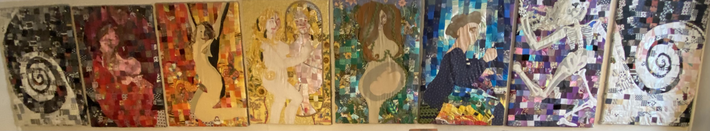
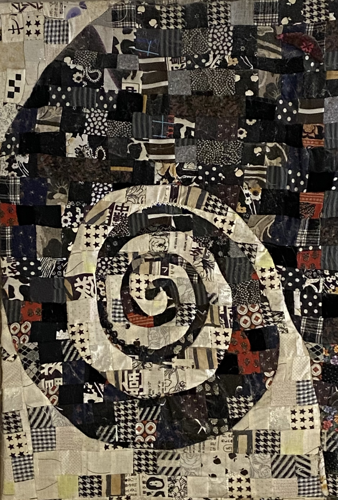
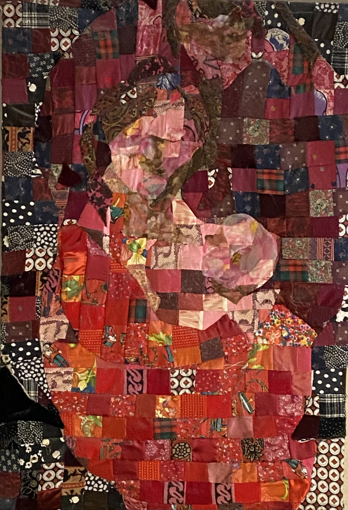
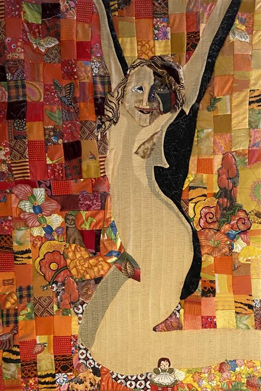
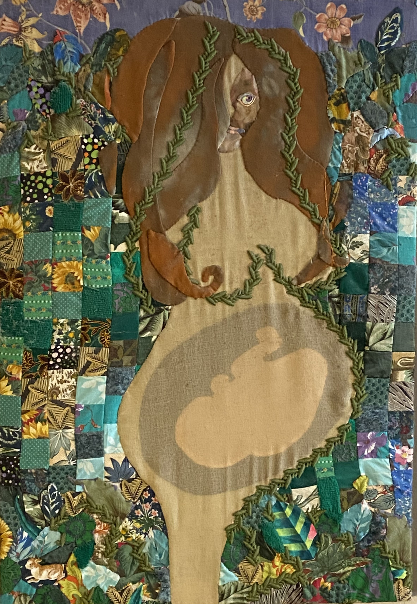
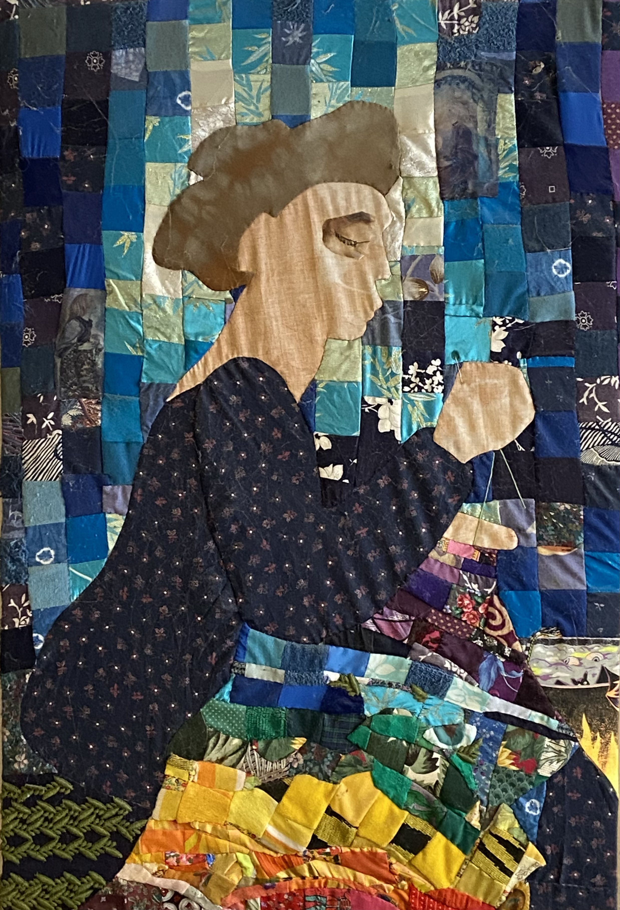
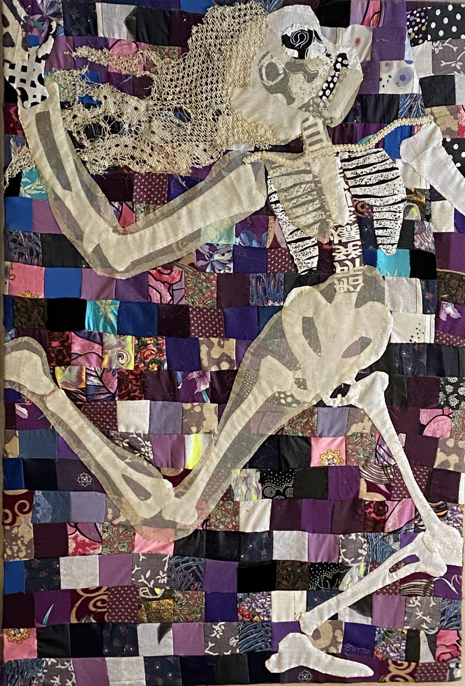
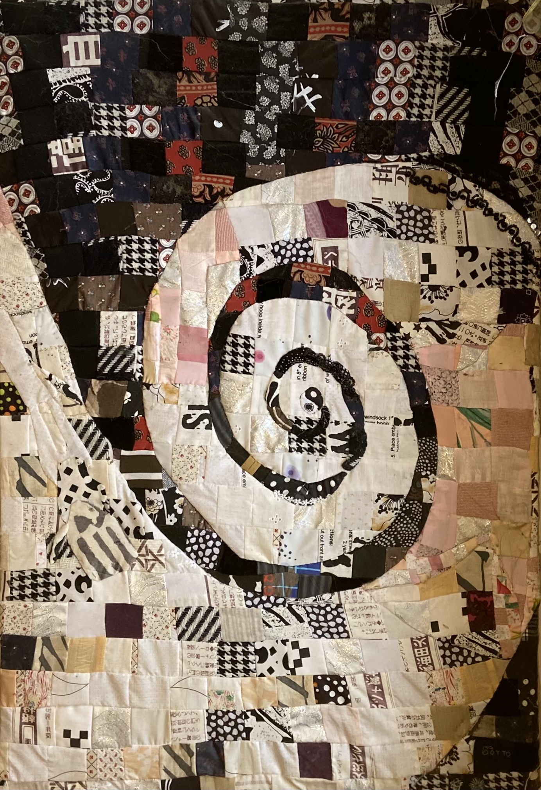

Lifecycle
A project exploring growth, change, and the seasons of life through fabric collage.

White to Black - Life Before Birth
A baby is born knowing its parents’ voices and showing a preference for the language spoken by its mother. "Anna used to get the hiccups inside me and jumped when a loud crash happened in a restaurant kitchen where I was working."

A Baby is Born
Infants don’t know where they end and their mother begins. The father is even more remotely recognized (looking over the mother’s shoulder).

Lifecycle — Panel 3
Placeholder description for this stage of the project.

Lifecycle — Panel 4
Placeholder description for this stage of the project.

Lifecycle — Panel 5
Placeholder description for this stage of the project.

Lifecycle — Panel 6
Placeholder description for this stage of the project.

Lifecycle — Panel 7
Placeholder description for this stage of the project.

Lifecycle — Panel 10
Placeholder description for this stage of the project.